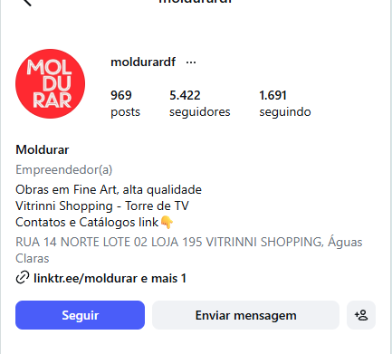

Proposta Comercial | 30 dias de operação inicial
Moldurar DF com uma presença digital mais forte, elegante e estrategicamente posicionada.
A D'Leads propõe uma operação em Meta Ads desenhada para transformar percepção estética em intenção comercial, conectando marca, investimento e geração de oportunidades no Distrito Federal.
Toda projeção apresentada neste material representa cenário estimado de performance, condicionado à execução correta, à qualidade dos criativos, às otimizações, à resposta do público e ao atendimento comercial. Não se trata de garantia absoluta de resultado.
Uma marca com assinatura forte, repertório visual claro e espaço real para ganhar valor percebido no digital.

Prospecção
Segunda a quarta com mais força para descoberta, audiência qualificada e ganho de tração.
Remarketing
Quinta a domingo com reconexão, maturação do interesse e presença inteligente.


02. Cenário e oportunidade
O mercado responde melhor quando o produto certo aparece para o olhar certo.
Molduras e quadros premium não competem apenas por clique. Competem por contexto, desejo, curadoria e percepção de valor.

A Moldurar DF atua em uma categoria na qual acabamento, ambiente e sofisticação influenciam diretamente a decisão de compra. Isso pede uma estratégia que não pareça varejo genérico, mas sim uma curadoria visual capaz de elevar percepção de valor e intenção de compra.
O papel da D'Leads é transformar mídia em posicionamento. Cada anúncio deve funcionar como uma vitrine de marca, mostrando que o produto não é apenas decorativo, mas parte da construção de um espaço mais sofisticado, desejável e memorável.
03. Objetivo da operação
Quatro movimentos para transformar tráfego em posicionamento e venda.
O primeiro ciclo foi desenhado para validar mercado, gerar aprendizado e abrir espaço para escala com mais segurança.
Atrair atenção qualificada
Fazer a Moldurar DF entrar no radar de um público mais aderente ao universo de decoração, arquitetura e estilo de vida sofisticado.
Gerar leads com intenção
Transformar atenção em mensagens, cliques e conversas com potencial comercial real, priorizando qualidade sobre volume superficial.
Fortalecer a imagem da marca
Construir percepção de valor, curadoria e exclusividade para sustentar desejo, reconhecimento regional e intenção de compra.
Crescer com base estratégica
Criar um primeiro ciclo capaz de gerar aprendizado, validar a direção e abrir espaço para escala futura com mais segurança.
04. Estratégia geral
Prospecção forte, remarketing inteligente e direção estética coerente.
Instagram e Facebook operam como ecossistema de descoberta, maturação e retomada do interesse.
Apresentar a marca para novos públicos
Segunda, terça e quarta recebem maior intensidade para descoberta, aprendizagem rápida e abertura de audiência qualificada.
→
Reativar quem já demonstrou interesse
Quinta a domingo trabalham lembrança, reconexão e recuperação de oportunidades com mais proximidade do fechamento.
05. Público-alvo
Segmentação regional com recorte de afinidade e poder de compra.
A campanha começa focada no Distrito Federal, com recorte inicial em perfis mais aderentes ao universo premium da Moldurar DF.

Homens 25+
Perfil com afinidade com imóvel, reforma, escritório, presente sofisticado e valorização visual do ambiente.
Mulheres 30+
Público com forte relação com decoração, curadoria da casa, acabamento e decisão estética em ambientes de maior valor agregado.
Arquitetura e design
Interesses em interiores, ambientes sofisticados, imóveis, decoração autoral e lifestyle premium.
06. Posicionamento da comunicação
Não vender preço. Vender atmosfera, curadoria e exclusividade.
A Moldurar DF deve aparecer como marca que valoriza o ambiente, o acabamento e a sensação de escolha sofisticada.
A comunicação precisa fazer cada peça parecer uma extensão da experiência do produto: premium, bem composta, desejável e memorável. Em vez de competir pelo menor preço, a campanha será guiada por estética, personalização, exclusividade e valorização do ambiente.
07. Lógica semanal da campanha
O ritmo da semana acompanha o ritmo da decisão.
Segunda a quarta concentram a prospecção. Quinta a domingo sustentam remarketing e manutenção.
Prospecção forte
Maior intensidade para descoberta de novos públicos e geração dos primeiros sinais de intenção.
Expansão qualificada
Continuidade da prospecção com leitura de audiência e reforço dos melhores formatos.
Reforço de captação
Último pico da janela principal para consolidar alcance e preparar a retomada.
Remarketing
Reimpacto em pessoas que já visualizaram, clicaram ou demonstraram interesse.
Lembrança de marca
Manutenção estratégica com foco em permanência e aquecimento da intenção.
Presença leve
Entrega moderada para manter presença sem desperdiçar verba.
Reconexão
Fechamento da semana com manutenção e observação para reinício da prospecção.
08. Escala de investimento semanal
Uma curva crescente para validar, otimizar e ganhar tração com controle.
A distribuição semanal evita concentração prematura da verba e permite crescer a partir do que provar melhor aderência.
| Semana | Objetivo | Investimento |
|---|---|---|
| Semana 1 | Validação inicial e calibração | R$ 140,00 |
| Semana 2 | Expansão com base nos primeiros aprendizados | R$ 175,00 |
| Semana 3 | Escala tática dos melhores conjuntos | R$ 210,00 |
| Semana 4 | Maior intensidade sobre o que performou melhor | R$ 245,00 |
| Total sugerido | Curva mensal dentro da faixa indicada | R$ 770,00 |
A operação começa com validação controlada, cresce com base em leitura real de performance e direciona mais verba para aquilo que demonstrar melhor potencial comercial. O objetivo é combinar método, prudência e ambição.
09. Distribuição de verba por dia
Segunda a quarta lideram a prospecção. Quinta a domingo sustentam a reconexão.
A verba diária foi organizada para enfatizar descoberta sem perder presença de remarketing.
Segunda, terça e quarta são dias de prospecção com maior força. Quinta a domingo trabalham remarketing e manutenção. A distribuição pode ser ajustada conforme o comportamento da campanha.
10. Plano de criativos
Um portfólio inicial de 8 a 12 peças para testar linguagem, formato e intenção.
A estética da campanha precisa vender ambiente, sofisticação, acabamento e desejo, com leitura visual forte desde o primeiro impacto.
Criativo principal
Ambiente decorado com quadro em destaque
Peça de abertura para valor percebido, aspiração e contexto de uso.
3 peças focadas em sofisticação, ambiente e acabamento.
2 composições com ambientes, antes e depois e narrativa visual.
2 vídeos com textura, moldura, detalhe e transformação do espaço.
1 criativo institucional, 1 a 2 criativos de remarketing e 1 peça adaptável a sazonalidade.
11. Campanhas sazonais e de oportunidade
Calendário de ideias para manter a marca conectada ao momento certo.
Além da operação base, a estratégia prevê campanhas temáticas que reforçam intenção de compra sem perder posicionamento.
Datas afetivas
Dia das Mães, Dia dos Namorados, Natal e Ano Novo com leitura de presente sofisticado e memória afetiva.
Momentos da casa
Campanhas ligadas a inauguração, reforma, apartamento novo, renovação do ambiente e valorização do espaço.
Oportunidades temáticas
Temas em alta, tendências de decoração, semanas especiais e contextos regionais que reforcem a intenção de compra.
12. Investimento e entregas
Clareza financeira com entregas estratégicas definidas.
O investimento inicial foi pensado para validar mercado, fortalecer marca e gerar dados acionáveis sem exigir um salto agressivo no início.
Planejamento, estruturação, segmentação, direção criativa, monitoramento e otimização recorrente.
Faixa de investimento indicada para o primeiro ciclo, com base sugerida em R$ 770,00.
Entrada comercial pensada para performance, validação e fortalecimento de marca.
Planejamento da operação e lógica de investimento para o primeiro ciclo.
Configuração e gestão das campanhas em Instagram e Facebook com orientação estratégica.
Segmentação de público, ajustes orientados a performance e direção de copy e criativos.
Acompanhamento estratégico e otimizações recorrentes para ganho de eficiência.
Conforme a campanha responda bem, os criativos mostrem aderência e o processo comercial aproveite os leads com eficiência, a verba pode evoluir de maneira proporcional e mais segura nos ciclos seguintes.
13. Meta inicial do primeiro mês
Projeção comercial do primeiro ciclo, com responsabilidade e direção.
A ambição do projeto é clara, mas a linguagem permanece juridicamente segura.
A meta inicial de performance é buscar um cenário estimado de crescimento de até 25% em vendas no primeiro ciclo, desde que exista boa resposta do público, processo comercial ativo e atendimento eficiente. Essa leitura deve ser tratada como objetivo comercial, não como garantia absoluta.
Aumento de leads qualificados e de conversas com intenção real.
Fortalecimento da imagem da marca e da percepção premium da Moldurar DF.
Maior presença digital regional e crescimento de reconhecimento.
Avanço da consideração de compra e base mais sólida para otimização futura.
14. Próximo passo e fechamento
Uma proposta para fechar com direção, clareza e impacto.
A D'Leads entra para estruturar presença, narrativa comercial e lógica de investimento, não apenas operar anúncios.
A Moldurar DF já tem produto para ocupar um espaço premium. Agora precisa de uma presença digital à mesma altura.
Ao aprovar esta proposta, o próximo passo é alinhar o plano criativo, estruturar as campanhas e iniciar a operação com método, estética e foco em crescimento comercial.
EscopoMeta Ads com prospecção e remarketing
InvestimentoR$ 1.900,00 a R$ 2.000,00 no ciclo inicial
ObjetivoCrescimento comercial com marca mais forte e presença regional premium